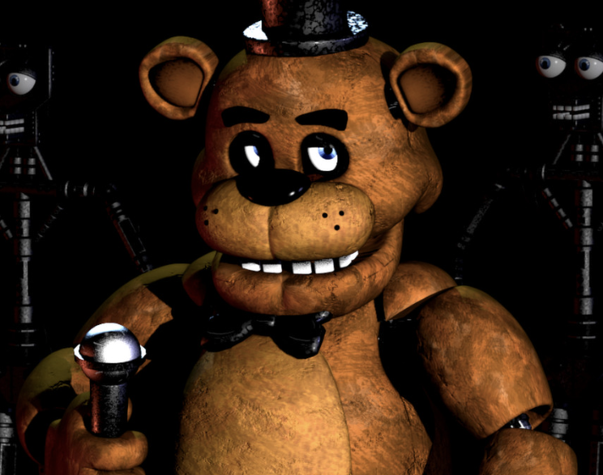
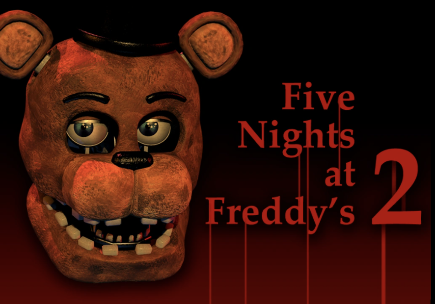
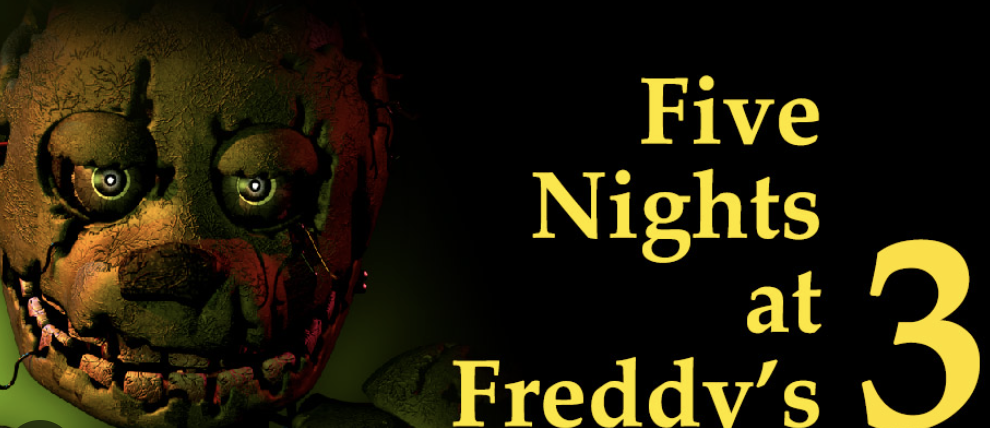
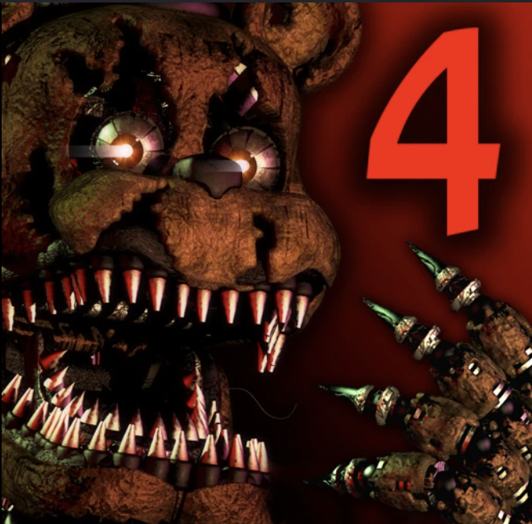
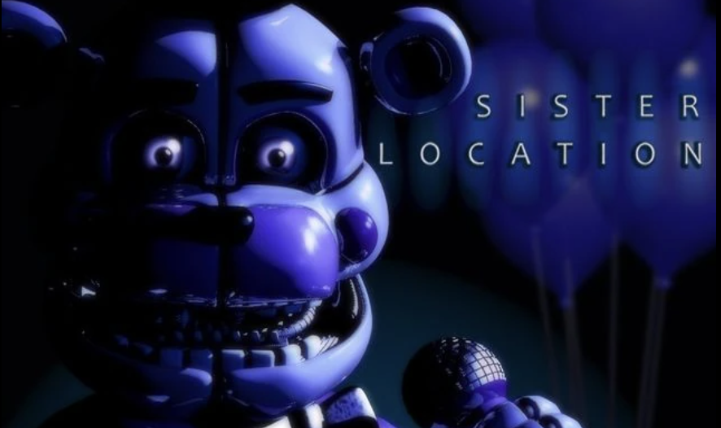

FNaF Game Timeline
The complete chronological order of Five Nights at Freddy's games

Five Nights at Freddy's
1987 / 1993
The original game that started it all. You play as Mike Schmidt, a security guard working the night shift at Freddy Fazbear's Pizza. Survive five nights while animatronics roam freely at night.

Five Nights at Freddy's 2
1987 (Prequel)
A prequel set in the "new and improved" Freddy Fazbear's Pizza. Features the Toy animatronics, Withered animatronics, and the introduction of new characters like the Puppet and Balloon Boy.

Five Nights at Freddy's 3
2023
Set 30 years after the closure of Freddy Fazbear's Pizza. Takes place in Fazbear's Fright: The Horror Attraction. Features Springtrap, the decayed remains of William Afton, and introduces phantom animatronics.

Five Nights at Freddy's 4
1983
The final chapter of the original story. Takes place in a child's bedroom during 1983. Features nightmare versions of the animatronics and explores the backstory of the Bite of '83 incident.

FNaF: Sister Location
1980s-1990s
Introduces Circus Baby's Entertainment & Rental. Features new animatronics like Circus Baby, Ballora, Funtime Foxy, and Funtime Freddy. Expands the lore with the Afton family story.
Important Timeline Notes
The Bite of '87
A pivotal event mentioned in the first game where an animatronic bites a person during daytime, leading to new safety rules.
Missing Children Incident
Five children go missing at Freddy Fazbear's Pizza, their souls supposedly possessing the original animatronics.
William Afton
The main antagonist, also known as Purple Guy. Creator of the animatronics and responsible for the missing children.